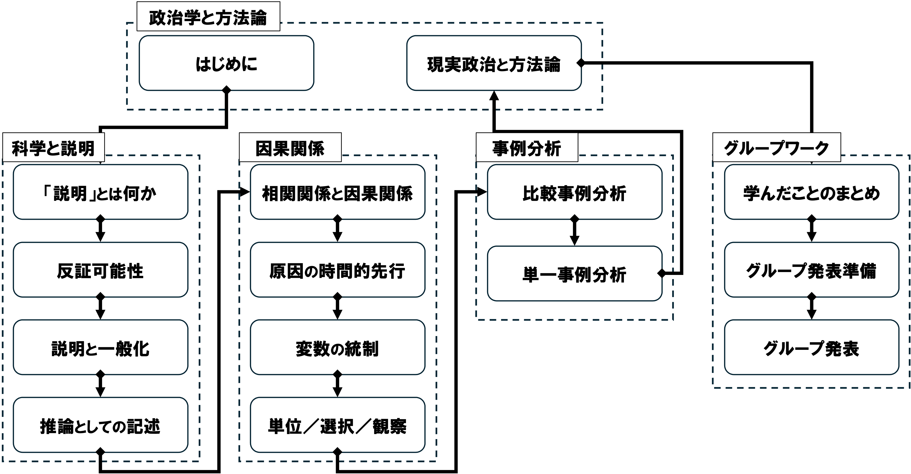

01/はじめに
現代政治分析入門1
2026-04-14
今日の目次
- はじめに
- 授業概要
- 諸注意と評価
- アイスブレイク
- まとめ
はじめに
本日の目的と到達目標
目的
本科目の目的・計画・評価方法・諸注意を紹介し、受講の可否の判断材料を提供する。仲間と受講の動機を共有し、今後学んでいくための環境を整える。
到達目標
- 本科目「現代政治分析入門1」の目的、進め方、評価方法を他人に説明できる。
- 自分の興味関心を言語化し、本科目で学びたいことを他人に説明できる。
- 学ぶ仲間の名前を4人以上言うことができる。
担当者の自己紹介

鈴木淳平（すずき・じゅんぺい）
駒澤大学法学部政治学科講師
- 学位：早稲田大学博士（政治学）（2024年）
- 職歴：早稲田大学助手→東京大学特任研究員→駒澤大学講師
- 専門：先進諸国の比較政治経済学
- 居室：第二研究館2825室
アンケート①
今日の調子はいかがですか？
- 良い
- まあまあ
- 悪い
アンケート②
今、何年生ですか？
- 1年生
- 2年生
- 3年生
- 4年生
アンケート③
教室の中を見渡してみましょう。何人名前を知っている人がいますか？
- 0人
- 1人
- 2人
- 3人以上
授業概要
授業概要
- 現代の政治分析＝さまざまな政治現象の原因をデータや証拠に基づいて探究
- 政治学において因果推論を行う理論的視座を身につける
- 社会科学方法論の基礎を学ぶ
- 講義方式によるが、アクティブラーニングを用いたワークを積極的に活用
到達目標
- 政治学において厳密な因果推論を行うことの意義を説明できる。
- さまざまな政治現象について、「科学的な説明」とそうでない説明を識別できる。
- 因果関係の定義とそれを立証するための基本的な方法を説明できる。
- 少数の事例から因果関係を推論・実証する基本的な方法を説明できる。
- 自らの興味関心に沿って、因果推論を伴う基本的な研究計画を立案できる。
- グループワークを通じて、相互に学びの深化に貢献できる。
進行計画

諸注意と評価
授業の進め方
- 基本的は対面の講義方式で、スライドを使用
- ただし 14 回までオンライン振替の可能性
- 授業資料等はWebClassで共有
- スライドのハードコピーは配布はしない予定なので、各自でダウンロードすること
- ただしワークシートなどを配布することがある
- 随時アクティブラーニングも取り入れ、「聞くだけ」の授業にはしない
- 事前・事後学習、問いかけ、アンケート、ディスカッション⋯
- 特に期末3回はグループワークによる復習と政治分析の練習を行う
事前・事後学習
事前学習
- 指定された教科書等の該当部分を読む→授業開始までにWebClass上のチェックフォームに記入
- 【教科書・購入必須】久米郁男（2025）『原因を推論する［新版］』有斐閣．
- これ以外の文献も事前学習課題として指定されることがある（WebClassで共有）
事後学習
- 授業の3日後（金曜日）を締切として、オンラインのフォーム上でリアクションペーパー記入（合計200字程度）
- 次回授業でなるべくフィードバック予定
連絡方法とオフィスアワー
- コンタクトは必ず担当者のメールアドレスに行うこと
- WebClassのメッセージ機能では気づかない可能性大
- メールを送付する際は「メールの書き方」を必ず参照し、形式やマナーを守ること
- オフィスアワー（OH）：木曜日4限 2研2825室
- OH中はアポなしで来室可能
- これ以外でもアポにより対応可能
その他注意
- オンラインのツールを用いることがあるので、できるだけ電子機器持参
- 授業計画は若干の変更の可能性あり
- データ分析に特化した「現代政治分析入門2」の履修も合わせて推奨
評価
レポート（50%）⋯グループで研究計画案の作成と発表
- 仮説を提示し、その検証のための方法を立案できているか評価（40%）
- グループ作業で相互協力できているか評価（10%）
平常点（30%）⋯事後学習のリアクションペーパー
- 授業で学んだことと感想（20%）
- 相互推薦による参加度合いの評価（10%）
復習セッション（20%）⋯第13回に実施
- 4グループ程度に分かれてワークし、その成果を共有
- ワークでの貢献度および成果の質を、相互評価も加味しつつ評価
相互推薦システム
- アクティブラーニングへの積極的な参加を評価
- その回の授業でのワーク等で良い働きをしたと思われる他の受講生を推薦
- 推薦は任意で、推薦する場合は理由を記載
- 理由が具体的かつ明確でない場合は推薦不成立
- 対象授業期間1を通じて推薦された回数をカウントし、次のように加点
- 対象期間中12回以上推薦獲得→基礎点として平常点4ポイント分獲得
- それ以降は4回の推薦につき平常点2ポイントを追加
- 全24回推薦された場合は平常点の満点10ポイント
アイスブレイク
はじめに
目的
- 共に学ぶ仲間のことを知る
- それぞれの受講動機を明確にする
- グループワークに慣れる
到達目標
- 2名以上の受講者の名前を言える
- 自分の受講動機を明確に他者に説明できる
- このクラスを安心な場となるような振る舞いができる
グラウンドルール
学び合う環境づくりのために…
- 「さん」づけで呼びましょう
- どんなことからでも学べるつもりで
- 相手の話を関心をもってよく聴く
- 3K⋯敬意を持って、忌憚なく、建設的に
アイスブレイクの手順
- 受講動機を整理する（個人：1分）
- どこかにメモをする
- お互いを知る①（ペア：1:30×2人）
- 2人組になる
- あいうえお順で早い方から自己紹介
- 相手の名前・出身高校・所属部活／サークル・受講動機を聴き、メモする
- お互いを知る②（グループ：1:30×4人）
- ペア2組を合併して、4人グループを作る
- ペアの相手の名前・出身高校・所属部活／サークル・受講動機を、新たなグループメンバーに紹介する
- 順番は、あいうえお順で遅い方のいるペアから、遅い方が先に紹介
まとめ
本日の目的と到達目標
目的
本科目の目的・計画・評価方法・諸注意を紹介し、受講の可否の判断材料を提供する。仲間と受講の動機を共有し、今後学んでいくための環境を整える。
到達目標
- 本科目「現代政治分析入門1」の目的、進め方、評価方法を他人に説明できる。
- 自分の興味関心を言語化し、本科目で学びたいことを他人に説明できる。
- 学ぶ仲間の名前を4人以上言うことができる。
次回までに
事後学習
- 授業資料を見直し、目標到達をセルフチェック
- WebClass上でのリアクションペーパー入力（金曜日まで）
事前学習
- 教科書（序章、1章）を読み、WebClass上でのチェックフォーム記入

はじめに